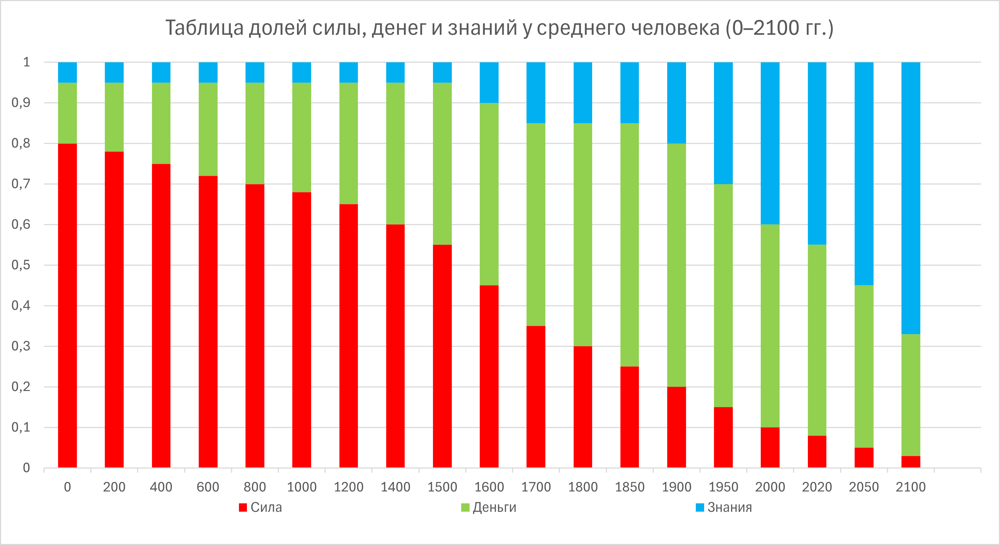

Всемирное агентство счастья
Сила, деньги и знания на основе достоинства
Сила, деньги и знания на основе достоинства
Рене Декарт (1596–1650) — создатель аналитической геометрии.
Борис Майоров (1950–…) — создатель аналитического пространства счастья на основе достоинства человека.
«Википедия», 2099 год
Социальная устойчивость 3Ц основана на расчёте трёх базовых ценностей: силы, денег и знаний. Устойчивость человека, государства и человечества рассматривается как результат баланса реализации и ограничения этих ценностей.
Социальная система устойчива тогда и только тогда, когда рост силы, денег и знаний не превышает способности общества к их контролю.
Формально:
\( C \ge \max(S, M, K) \)
Сила обеспечивает безопасность системы и предотвращает переход через критические границы. В устойчивой системе сила выполняет функцию сдерживания, а не применения.
Примечание: неконтролируемая сила приводит к насилию и разрушению институтов.
Деньги обеспечивают распределение ресурсов и экономическое развитие. Ограничение концентрации капитала необходимо для предотвращения олигархических структур.
Примечание: чрезмерная концентрация денег снижает устойчивость общества.
Знания являются главным ускорителем развития цивилизации. Однако распространение знаний, способных причинить массовый вред, требует механизмов ответственности.
Примечание: неконтролируемый рост знаний повышает технологические риски.
Инвариант устойчивости показывает, насколько система способна контролировать свои ключевые ценности.
\[ I_{3Ц} = \sqrt{C S^{2} + M^{2} + K^{2}} \]
Система устойчива при:
\( I_{3Ц} \ge 1 \)
Температура цивилизации отражает уровень напряжённости и риск перехода в кризисное состояние.
\[ T = \frac{\sqrt{S^{2} + M^{2} + K^{2}}}{C} \]
При \( T > 1 \) возрастает вероятность кризисов и конфликтов.
Мы живём в мире, где сила остаётся культом, деньги — главной ценностью, а знания всё чаще превращаются в оружие. Всемирное агентство счастья утверждает: человек — не ресурс, человек — мера.
Счастье — это не комфорт и не потребление, а гармония ценностей, основанная на достоинстве человека. Там, где достоинство подавлено, нет будущего — даже если достигаются победы.
Война — не судьба и не «необходимость», а управляемый проект разрушения с авторами, бюджетами и исполнителями. Агентство отказывается героизировать убийство и предлагает измерять войну.
Ограничения могут иметь несколько уровней — «луковая кожура».
| Страна | Сила | Деньги | Опасные знания | Тип модели |
|---|---|---|---|---|
| США | разрешено личное оружие, тяжёлое запрещено | потолка богатства нет | ограничения на биологию и ядерные технологии | максимальная свобода |
| ЕС | оружие строго лицензируется | сильные налоги и контроль капитала | строгий научный контроль | регулируемая свобода |
| Россия | гражданское оружие ограничено | прямого лимита нет, доступ к крупному капиталу ограничен | чувствительные области контролируются государством | государственно-центричная |
| Китай | частное оружие запрещено | крупный капитал под контролем партии | жёсткий контроль технологий | управляемая система |
| Мексика | формальные ограничения, высокий нелегальный оборот | концентрация капитала у элит и криминала | слабый контроль | ослабленное государство |
| Япония | почти полный запрет оружия | высокий налоговый контроль | строгие научные ограничения | социальная безопасность |
| Израиль | оружие по разрешению и службе | капитал свободен, но прозрачен | контроль военных технологий | безопасность через контроль |
| Швейцария | оружие разрешено, но строго учтено | растущая финансовая прозрачность | высокий научный контроль | ответственная свобода |
| Страна | Сила | Деньги | Знания |
|---|---|---|---|
| США | 0.75 | 0.95 | 0.70 |
| ЕС | 0.40 | 0.60 | 0.60 |
| Россия | 0.35 | 0.45 | 0.50 |
| Китай | 0.10 | 0.50 | 0.30 |
| Мексика | 0.60 | 0.80 | 0.70 |
| Япония | 0.05 | 0.65 | 0.55 |
| Израиль | 0.30 | 0.75 | 0.40 |
| Швейцария | 0.60 | 0.80 | 0.65 |
Если ограничения силы слабее, чем контроль денег, возникает криминальная власть. Устойчивые государства действуют в порядке:
Государство устойчиво, когда ни сила, ни деньги, ни знания не концентрируются быстрее, чем общество способно их контролировать.
\( C \ge \max(S, M, K) \)
Где \( C \) — способность общества контролировать силу, деньги и знания;
\( S, M, K \) — концентрация силы, денег и опасных знаний соответственно.
\[ U = C S^{2} + M^{2} + K^{2} \]
Знания растут быстрее силы и денег. Если институты не успевают — возникает кризис.
Государство достигает предела, когда глобальные сила, деньги и знания растут быстрее, чем национальный контроль.
\( S_{g}, M_{g}, K_{g} > C_{n} \)
Возникает надгосударственный уровень регулирования — глобальный контроль 3Ц.
Свобода максимальна, когда сила, деньги и знания человека не переходят границу, за которой начинается угроза другим.
\[ (S, M, K)_{\text{person}} \le \text{Safety}_{\text{society}} \]
Абсолютная свобода любой ценности уничтожает свободу остальных.
Однако проблема соотношения элит и среднего человека не решена

Цивилизации развиваются быстрее там, где сила, деньги и знания растут согласованно и сбалансированно.
Регионы отличаются не людьми и не культурой, а формой ограничения трёх ценностей — контурами регулирования силы, денег и знаний.
Возраст государства определяется не календарём, а положением в системе 3Ц. Иногда «древние» и «молодые» государства меняются местами.
Коротко: устойчивость — это баланс силы, денег и знаний при сохранении достоинства человека.
В XXI веке ускоренный рост силы, знаний и глобальных финансовых систем опережает развитие институтов глобального контроля. Вероятны усиление международной координации, рост регулирования технологий и формирование надгосударственных механизмов управления рисками.
Будущее связано с измерением и управляемой динамикой ценностей. Украденное и растраченное будущее — главный ущерб народов.
Принцип Агентства: не «кто сильнее, богаче и ловчее», а «кто ответственнее перед будущим».
Борис Майоров
Президент Всемирного агентства счастья
Февраль–март 2026 года